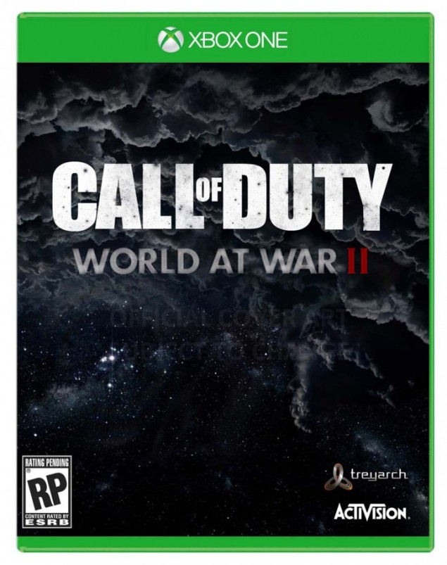

Call of Duty World War II


In Library
Hours Played Online:
- Grant: 10 hours (78% of total)
- Chase: 13 hours (97% of total)
- Steph: 4 hours (38% of total)
Call of Duty World War II is the much-anticipated, boots-on-the-ground Call of Duty everyone has been waiting for. There had been rumors of a Vietnam War-era game, but fans are glad to see the next Call of Duty installment as a World War II game. The player will be a part of American history as they storm the beaches of Normandy and take down the Nazi Regime.